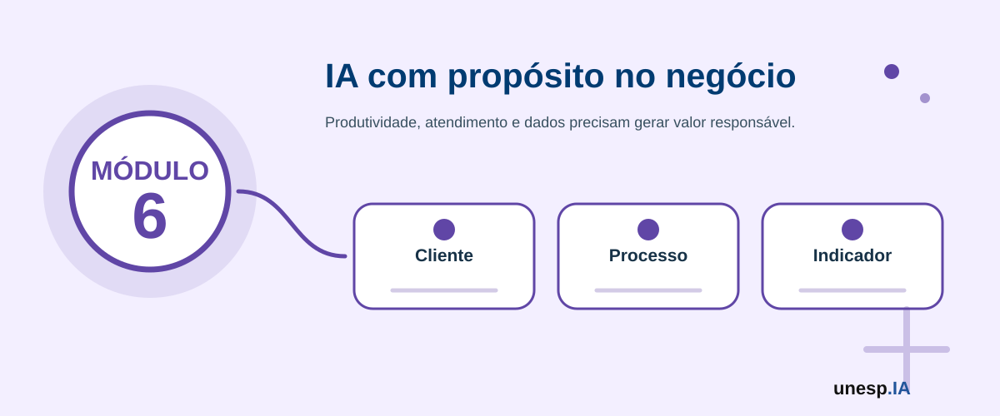

Inteligência Artificial para Negócios e Empreendedorismo
Ferramentas relacionadas neste módulo

Apresentação
A Inteligência Artificial está transformando a forma como empresas, pequenos negócios, profissionais liberais, microempreendedores individuais, startups e organizações inovam, atendem clientes, divulgam produtos, organizam processos e tomam decisões.
No contexto dos negócios, a IA pode apoiar desde tarefas simples, como criação de textos para redes sociais, respostas a clientes e organização de planilhas, até atividades mais estratégicas, como análise de clientes, previsão de vendas, automação de atendimento, identificação de oportunidades, melhoria de processos, integração de ferramentas e construção de novos modelos de negócio.
O Módulo 6 – Inteligência Artificial para Negócios e Empreendedorismo tem como objetivo capacitar os participantes para compreender e aplicar a IA em situações reais de negócios, com foco em produtividade, criatividade, atendimento, marketing, análise de dados, automação, inovação e tomada de decisão.
A proposta não é substituir o conhecimento do empreendedor ou do profissional sobre seu próprio negócio, mas ampliar sua capacidade de observar problemas, organizar informações, criar soluções, melhorar processos e tomar decisões mais bem fundamentadas com apoio da tecnologia.
1. Organização do Módulo
Carga horária total
20 horas.
Público recomendado
Empreendedores, microempreendedores individuais, empresários, profissionais liberais, comerciantes, startups, trabalhadores autônomos, estudantes, gestores de pequenos negócios, participantes de ecossistemas de inovação e cidadãos interessados em aplicar Inteligência Artificial em iniciativas empreendedoras.
Objetivo geral
Capacitar os participantes para utilizar Inteligência Artificial em negócios e empreendedorismo, apoiando produtividade, comunicação, marketing, atendimento ao cliente, análise de dados, automação de processos, inovação e desenvolvimento de soluções aplicadas a problemas reais.
Competências desenvolvidas
Ao final do módulo, espera-se que o participante seja capaz de:
- identificar oportunidades de aplicação da IA em negócios;
- compreender como a IA pode apoiar pequenos negócios, MEIs, startups e profissionais autônomos;
- utilizar IA para planejamento, produtividade e organização empresarial;
- criar textos, campanhas e conteúdos de marketing com apoio de IA;
- utilizar IA para melhorar atendimento e relacionamento com clientes;
- organizar dados simples de clientes, vendas, produtos e processos;
- utilizar IA para gerar insights de negócio;
- criar prompts (instruções para a IA) específicos para negócios e empreendedorismo;
- compreender possibilidades de automação com IA;
- diferenciar automação, workflow, skill e agente de IA em situações de negócio;
- modelar uma skill simples com gatilho, entradas, ações, saídas, validações, custos e supervisão humana;
- comparar ferramentas de automação considerando vantagens, limitações, custos e riscos;
- mapear riscos, limites e cuidados éticos no uso empresarial da IA;
- proteger dados de clientes, parceiros e fornecedores;
- desenvolver uma proposta ou protótipo de solução de IA aplicada a um problema de negócio.
2. Estrutura das Unidades
| Unidade | Tema | Carga horária |
|---|---|---|
| Unidade 6.1 | IA como oportunidade para negócios e empreendedorismo | 3h |
| Unidade 6.2 | IA para produtividade, gestão e organização empresarial | 3h |
| Unidade 6.3 | IA para marketing, vendas e comunicação digital | 4h |
| Unidade 6.4 | IA para atendimento ao cliente e relacionamento | 3h |
| Unidade 6.5 | IA para análise de dados, indicadores e tomada de decisão | 4h |
| Unidade 6.6 | Automação, Skills e Agentes de IA para Negócios | 2h |
| Unidade 6.7 | Laboratório de inovação: proposta ou protótipo de IA para negócios | 1h |
| Total | 20h |
A sequência pedagógica segue a lógica:
oportunidade → organização → marketing → atendimento → dados → automação e agentes → solução aplicada
Unidade 6.1 – IA como oportunidade para negócios e empreendedorismo
Carga horária
3 horas
Objetivo da unidade
Apresentar como a Inteligência Artificial pode ser utilizada como oportunidade de inovação, melhoria de processos, geração de valor e competitividade para negócios de diferentes portes.
Situação de abertura
Carlos tem uma pequena loja e gostaria de divulgar melhor seus produtos. Ana é profissional autônoma e precisa organizar sua agenda e responder clientes com mais rapidez. João quer abrir um negócio, mas ainda não sabe como avaliar o público-alvo. Dona Helena produz doces e quer criar mensagens para divulgar seus produtos no bairro. Uma startup deseja testar uma ideia de solução com IA antes de investir no desenvolvimento completo.
Conceitos principais
A IA pode ser entendida, no contexto dos negócios, como uma tecnologia de apoio à criação de valor. Ela pode ajudar a reduzir tempo em tarefas repetitivas, melhorar a comunicação, organizar dados, gerar ideias, personalizar atendimento, automatizar processos e apoiar decisões.
O que a IA pode fazer pelos negócios?
- criação de ideias de produtos e serviços;
- análise inicial de público-alvo;
- produção de textos comerciais;
- criação de campanhas;
- atendimento inicial ao cliente;
- organização de tarefas;
- planejamento de ações;
- análise de vendas;
- geração de relatórios simples;
- automação de respostas frequentes;
- melhoria de processos internos;
- identificação de oportunidades de inovação.
Atividade guiada
- Escolher um negócio real ou fictício.
- Listar três problemas ou oportunidades.
- Indicar quais poderiam ser apoiados por IA.
- Escolher uma oportunidade prioritária.
- Apresentar para a turma.
Mapa inicial de oportunidades de uso de IA no negócio.
Unidade 6.2 – IA para produtividade, gestão e organização empresarial
Carga horária
3 horas
Objetivo da unidade
Demonstrar como a IA pode apoiar planejamento, organização de tarefas, gestão de rotina, elaboração de documentos, análise de prioridades e melhoria da produtividade em negócios.
Aplicações práticas
- organização de agenda e tarefas;
- criação de checklists operacionais;
- resumo de reuniões e mensagens;
- elaboração de procedimentos internos;
- criação de modelos de e-mail e respostas;
- planejamento semanal ou mensal de atividades;
- organização de ideias em tabelas ou quadros.
Exemplo prático
Um profissional liberal pode usar IA para transformar mensagens soltas de clientes em uma lista de tarefas com prioridade, prazo e próximo passo, sempre revisando antes de executar qualquer ação.
Atividade guiada
- Escolher uma rotina administrativa.
- Descrever a rotina em linguagem simples.
- Pedir à IA para organizar em etapas.
- Transformar o resultado em checklist.
- Revisar e ajustar conforme a realidade do negócio.
Checklist ou plano de produtividade empresarial com apoio de IA.
Unidade 6.3 – IA para marketing, vendas e comunicação digital
Carga horária
4 horas
Objetivo da unidade
Explorar o uso da IA na criação de conteúdos, campanhas, textos comerciais, mensagens de divulgação, descrição de produtos, análise de público-alvo e apoio a vendas.
Conteúdos abordados
- definição de público-alvo;
- proposta de valor;
- descrição de produtos e serviços;
- posts para redes sociais;
- calendário editorial;
- mensagens para WhatsApp e e-mail;
- campanhas de datas comemorativas;
- cuidados com promessas exageradas e comunicação enganosa.
Exemplo prático
Dona Helena pode pedir à IA sugestões de mensagens para divulgar doces artesanais, adaptar o texto para WhatsApp, Instagram e cartaz impresso, e revisar se a mensagem está clara, ética e adequada ao público local.
Atividade guiada
- Escolher um produto, serviço ou iniciativa.
- Definir público-alvo e diferencial.
- Criar três mensagens com IA.
- Adaptar cada mensagem para um canal.
- Revisar linguagem, clareza e promessa comercial.
Mini campanha de comunicação ou vendas com apoio de IA.
Unidade 6.4 – IA para atendimento ao cliente e relacionamento
Carga horária
3 horas
Objetivo da unidade
Apresentar formas de utilizar IA para melhorar atendimento, responder dúvidas frequentes, organizar solicitações, criar mensagens de relacionamento e identificar situações que exigem intervenção humana.
Aplicações práticas
- respostas para perguntas frequentes;
- mensagens de boas-vindas;
- orientações de compra, agendamento ou entrega;
- resumos de conversas;
- classificação de solicitações;
- encaminhamento para humano em reclamações e casos sensíveis;
- registro de dúvidas recorrentes.
Cuidados
O uso de IA no atendimento deve evitar respostas inventadas, linguagem inadequada, exposição de dados pessoais, promessas não autorizadas e decisões automáticas em situações sensíveis.
Atividade guiada
- Listar cinco perguntas frequentes de clientes.
- Criar respostas com IA.
- Definir quando o atendimento deve ser humano.
- Montar um pequeno roteiro de atendimento.
- Testar com perguntas simples e perguntas difíceis.
Kit de atendimento com respostas frequentes e critérios de encaminhamento humano.
Unidade 6.5 – IA para análise de dados, indicadores e tomada de decisão
Carga horária
4 horas
Objetivo da unidade
Capacitar os participantes para organizar dados simples de negócio, interpretar indicadores básicos, gerar relatórios e utilizar IA como apoio à leitura de informações e à tomada de decisão.
Dados comuns em pequenos negócios
- vendas por período;
- produtos mais vendidos;
- clientes atendidos;
- canais de venda;
- pedidos, entregas e atrasos;
- despesas e receitas;
- avaliações e feedbacks;
- tempo de atendimento;
- tarefas pendentes.
Ferramentas indicadas
Excel, Google Sheets, Power BI, Looker Studio, ChatGPT, Gemini, Copilot, Julius e outras ferramentas disponíveis podem apoiar a organização e a interpretação dos dados.
Atividade guiada
- Organizar uma planilha simples de dados.
- Identificar três indicadores úteis.
- Gerar uma tabela ou gráfico.
- Solicitar à IA uma leitura inicial dos resultados.
- Revisar as conclusões e apontar limitações.
Painel simples de indicadores ou relatório de análise de dados de negócio.
Dados mostram pistas importantes, mas que outros fatores humanos, sociais e econômicos devem ser considerados antes de uma decisão?
Unidade 6.6 – Automação, Skills e Agentes de IA para Negócios
Carga horária
2 horas
Objetivo da unidade
Apresentar os conceitos de automação, workflows, skills e agentes de IA, capacitando os participantes a compreender como tarefas repetitivas de um negócio podem ser organizadas, automatizadas e parcialmente apoiadas por Inteligência Artificial, com atenção aos custos, riscos, limites e necessidade de supervisão humana.
Situação de abertura
Carlos recebe muitas mensagens perguntando preço, formas de pagamento e prazo de entrega. Dona Helena precisa confirmar pedidos, registrar informações dos clientes e enviar lembretes. Ana deseja organizar sua agenda, responder dúvidas frequentes e acompanhar solicitações. Uma pequena startup quer receber interessados, registrar contatos, classificar demandas e encaminhar mensagens para a equipe.
Em todos esses casos, a IA pode ajudar, mas nem tudo precisa ser feito por IA. Muitas tarefas podem ser resolvidas com regras simples, formulários, planilhas, mensagens automáticas e integrações entre ferramentas.
Conceitos principais
Automação é o uso de tecnologia para executar tarefas repetitivas com menor esforço manual. Workflow é um fluxo de trabalho composto por etapas, decisões, entradas, saídas e responsáveis. Skill é uma capacidade específica que um sistema pode executar para cumprir uma tarefa, como consultar uma informação, enviar uma mensagem, registrar um pedido, gerar um resumo ou abrir um ticket. Agente de IA é um sistema que pode receber um objetivo, analisar o contexto, escolher ferramentas e executar ações com certo grau de autonomia.
| Conceito | Explicação simples | Exemplo |
|---|---|---|
| Automação tradicional | Executa regras definidas previamente. | Se receber formulário, salvar na planilha e enviar e-mail. |
| Workflow com IA | Usa IA em uma ou mais etapas do fluxo. | Receber mensagem, resumir com IA e abrir ticket. |
| Skill | Capacidade específica e reutilizável. | Buscar informações em uma base de conhecimento. |
| Agente de IA | Escolhe ferramentas ou skills para cumprir um objetivo. | Atender cliente, consultar dados e sugerir próximo passo. |
| RPA | Robô que interage com telas quando não existe API. | Copiar dados de um sistema antigo para uma planilha. |
Elementos de uma skill
- nome da skill;
- objetivo;
- gatilho ou trigger;
- entradas necessárias;
- ações executadas;
- ferramentas utilizadas;
- saída esperada;
- mensagens de erro;
- necessidade ou não de aprovação humana;
- dados registrados em log;
- riscos, custos e cuidados.
Exemplo de skill: consultar pedido
| Elemento | Descrição |
|---|---|
| Objetivo | Informar ao cliente o status de um pedido. |
| Gatilho | Cliente pergunta: “onde está meu pedido?” |
| Entradas | Número do pedido, nome, telefone ou e-mail. |
| Ações | Validar dados, consultar planilha ou sistema, localizar status e gerar resposta curta. |
| Saída | Mensagem informando status, prazo ou orientação. |
| Aprovação humana | Necessária em reclamações, cancelamentos, divergências ou informações sensíveis. |
Tipos de automação
- automação simples com regras;
- automação com formulários e planilhas;
- automação com mensagens;
- automação com APIs e webhooks;
- automação com IA em uma etapa específica;
- chatbot com respostas automáticas;
- agente de IA com ferramentas;
- RPA, quando um robô interage com telas de sistemas.
Quando usar IA e quando não usar
Nem toda automação precisa de IA. Use regras simples quando a tarefa for previsível. Use IA quando for necessário interpretar texto, resumir mensagens, classificar intenção, extrair informações ou gerar uma resposta personalizada. Use agentes de IA apenas quando o processo exigir várias etapas, uso de ferramentas, decisões intermediárias e acompanhamento do contexto.
Ferramentas para skills, automação e agentes
| Categoria | Ferramentas | Vantagens | Limitações |
|---|---|---|---|
| IA conversacional | ChatGPT, Gemini, Copilot | Fáceis de usar para textos, ideias, atendimento, planejamento e análise inicial. | Podem errar, exigem revisão humana e dependem de planos e limites de uso. |
| Automação visual | n8n, Make, Zapier | Permitem criar fluxos com gatilhos, ações, integrações e APIs. | Podem exigir configuração, cuidado com permissões e controle de execuções. |
| Ecossistema Google | Forms, Sheets, Gmail, Calendar, Apps Script | Boa opção para pequenos negócios e atividades educacionais de baixo custo. | Apps Script exige noções de programação. |
| Atendimento e redes sociais | WhatsApp Business, ManyChat | Úteis para respostas frequentes, relacionamento e captação de interessados. | Dependem das regras das plataformas e podem ter custos por plano ou mensagem. |
| Chatbots e agentes | Botpress, Dialogflow CX, Copilot Studio | Apoiam fluxos conversacionais, intenções, base de conhecimento e integrações. | Podem ser mais complexos para iniciantes e depender de licenças. |
Custos e riscos
O custo de uma solução pode crescer quando o fluxo chama modelos de linguagem muitas vezes, envia textos longos, mantém histórico desnecessário ou permite que um agente execute várias etapas sem controle. Para reduzir custos, use regras antes de chamar IA, limite o tamanho das respostas, evite reenviar todo o histórico, registre logs, teste com poucos usuários e coloque aprovação humana em ações importantes.
| Tipo de solução | Custo típico | Exemplo |
|---|---|---|
| Regra simples sem IA | Baixo | Formulário enviado → salvar planilha → enviar e-mail. |
| Workflow com IA pontual | Médio | IA resume mensagem e classifica prioridade. |
| Chatbot com IA generativa | Médio a alto | IA responde clientes livremente. |
| Agente com várias chamadas de LLM | Alto | Agente planeja, consulta ferramentas, valida, responde e executa ações. |
| RPA | Médio a alto | Robô interage com sistema sem API. |
Exemplo acessível com ferramentas Google
Uma pequena empresa pode usar Google Forms para receber pedidos de orçamento, Google Sheets para armazenar respostas, Gmail para enviar confirmação automática e Google Calendar para criar lembretes de retorno. Se necessário, Gemini pode ajudar a classificar a solicitação, mas a resposta final deve ser revisada por uma pessoa.
Fluxo exemplo
Cliente preenche formulário → resposta entra na planilha → sistema valida campos obrigatórios → IA classifica tipo de solicitação, se necessário → e-mail de confirmação é gerado → responsável recebe alerta → status é atualizado → execução fica registrada.
Cuidados éticos e de segurança
Uma automação ou agente de IA não deve ter liberdade total para alterar dados, enviar mensagens sensíveis, cancelar pedidos, fazer compras ou divulgar informações sem controle. É necessário proteger dados pessoais, revisar respostas, registrar ações, definir permissões e informar o usuário quando houver uso de IA.
Atividade guiada – Criando uma skill para um negócio
- Escolher um negócio real ou fictício.
- Identificar uma tarefa repetitiva.
- Definir o gatilho da automação.
- Listar os dados de entrada.
- Definir a ação principal.
- Escolher a ferramenta.
- Identificar se precisa ou não de IA.
- Definir a saída esperada.
- Mapear riscos, custos e cuidados.
- Apresentar o fluxo para a turma.
Modelo de registro
- Nome da skill:
- Problema que resolve:
- Gatilho:
- Entradas necessárias:
- Ações executadas:
- Ferramentas utilizadas:
- Usa IA? Sim ou não?
- Precisa de aprovação humana?
- Resultado esperado:
- Riscos, custos e cuidados:
Mapa de uma skill ou automação aplicada a um problema real de negócio.
A melhor automação é aquela que usa mais IA ou aquela que resolve o problema com segurança, baixo custo e simplicidade?
Unidade 6.7 – Laboratório de inovação: proposta ou protótipo de IA para negócios
Carga horária
1 hora
Objetivo da unidade
Integrar os conhecimentos do módulo por meio da criação de uma proposta ou protótipo simples de solução com IA aplicada a um problema de negócio, podendo incluir produtividade, marketing, atendimento, análise de dados, automação, skill ou agente conceitual.
Situação de abertura
Ana, Carlos, João, Dona Helena e a startup fictícia do módulo chegaram ao final do percurso com várias ideias. Agora precisam escolher uma solução viável, justificar o problema, indicar as ferramentas, mapear dados necessários, prever riscos e apresentar um protótipo simples.
Desafio final
Criar uma proposta ou protótipo de solução de IA para um problema de negócio. O produto pode ser simples, mas deve ser claro, aplicável, seguro e útil.
Possibilidades de produto
- mini campanha de marketing com IA;
- kit de atendimento ao cliente;
- painel simples de indicadores;
- proposta de automação;
- mapa de skill ou agente de IA;
- chatbot conceitual;
- protótipo visual;
- plano de produtividade empresarial;
- apresentação de solução empreendedora com IA.
Roteiro do laboratório
- Definir o problema real ou simulado.
- Identificar o público ou usuário beneficiado.
- Escolher a solução com IA ou automação.
- Descrever dados necessários.
- Escolher ferramentas.
- Indicar se haverá uso de LLM, regras, planilhas, formulário, workflow ou agente.
- Mapear riscos e cuidados com privacidade.
- Definir ponto de aprovação humana.
- Organizar apresentação final.
- Apresentar em até cinco minutos.
Modelo de apresentação
- Nome da solução;
- Problema que resolve;
- Público-alvo;
- Como a IA será usada;
- Ferramentas escolhidas;
- Dados necessários;
- Fluxo ou etapas da solução;
- Riscos e cuidados;
- Benefícios esperados;
- Próximos passos.
Ferramentas
ChatGPT, Gemini, Copilot, Canva, Google Forms, Google Sheets, Gmail, Google Calendar, Apps Script, WhatsApp Business, ManyChat, Make, Zapier, n8n, Power BI, Looker Studio ou ferramentas disponíveis.
Proposta ou protótipo de solução de IA aplicada a um problema de negócio.
A melhor solução com IA é a mais sofisticada ou aquela que resolve um problema real de forma simples, segura e útil?
Avaliação do Módulo 6
A avaliação será formativa, prática e participativa.
Critérios
- participação nas discussões;
- identificação clara de problema de negócio;
- adequação da IA ao problema proposto;
- uso adequado das ferramentas;
- criação de materiais de produtividade, marketing, atendimento ou análise;
- organização de dados ou informações;
- clareza na modelagem da skill ou automação, incluindo gatilho, entradas, ações, ferramentas, custos e supervisão humana;
- clareza da proposta ou protótipo;
- viabilidade da solução;
- criatividade e aplicabilidade;
- cuidado com privacidade e dados de clientes;
- reconhecimento de limites, riscos e responsabilidades;
- qualidade da apresentação final.
Produto final do módulo
Ao final do Módulo 6, o participante terá produzido:
Proposta ou protótipo de solução de IA aplicada a um problema de negócio.
Esse produto poderá ser:
- mini campanha de marketing;
- kit de atendimento ao cliente;
- painel simples de indicadores;
- proposta de automação;
- mapa de skill ou agente de IA para uma tarefa de negócio;
- chatbot conceitual;
- protótipo visual;
- plano de produtividade empresarial;
- apresentação de solução empreendedora com IA.
Resultado esperado
Ao final do Módulo 6, o participante deverá ser capaz de identificar oportunidades de uso da Inteligência Artificial em negócios, utilizar ferramentas de IA para produtividade, marketing, atendimento, análise de dados, automação e inovação, além de estruturar uma proposta ou protótipo simples, ético, seguro e aplicável a um problema real de empreendedorismo ou gestão empresarial.
O participante também deverá estar preparado para avançar para outros módulos temáticos, como IA para Gestão Pública e Prefeituras, IA na Educação, IA para Saúde e Bem-Estar, IA para Pesquisa Científica ou Agentes de IA, Skills e Automação Inteligente.